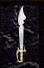

| Original Name | Nom Français |
| Crystal Sword of Might | Epée de puissance de cristal |
|
 |
|
| Lieu |
| Stoneheim Quête de Sir Beltigan |
| Bonus |
| +10 For & End & Dex, +15 TA, Ice Chains |
| Commentaires |
| 2 Commentaires |
Avoghai Thays
 Messages: 0 |
Belle épée Je pense que c'est la première arme qui sort des skin habituelle franchement la portée c'est vraiment très chouette car elle tape relativement fort et avec un bouclier HE elle donne un air de GB
Posté le : 26-03-2004 11:06:01 |
|
Eyolf Wotan
Messages: 11 |
- ça tape fort ça ? non j'trouve pas, du tout.
Par contre, le sort peut etre cool quand meme, mais l'arme en elle meme, nan, j'prefere une heron.
Posté le : 29-03-2004 12:22:18 |